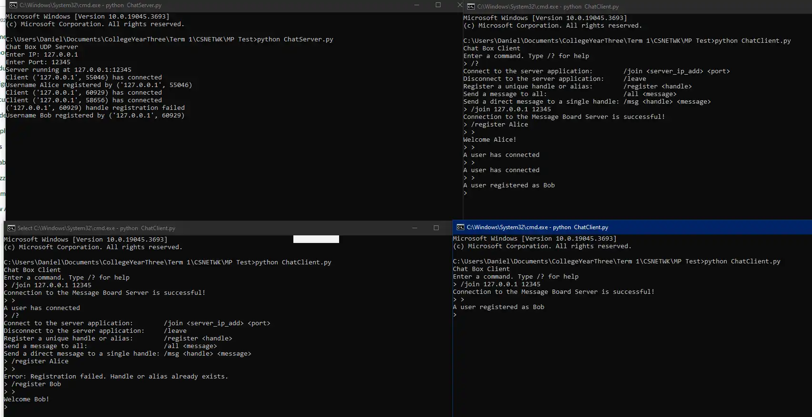
Java File Exchange System
A simple command-line file exchange system written in Java.
View on GitHubjl@world:~/portfolio$ Here's what I've been building lately.
All the projects I have worked throughout the years are listed here.
They include both university projects that were required by my courses,
and personal projects that I pursued for skill development and recreation.
Everything here is free and open-source, so feel free to visit
their respective GitHub repositories and try them!
These projects were done as part of my university courses, most of which are
Machine Projects (MPs) or Major Course Outputs (MCOs) that are required to pass the course.
All of these were projects made for Computer Science or IT-specific courses. More information
can be found at their respective GitHub repositories.

A simple command-line file exchange system written in Java.
View on GitHub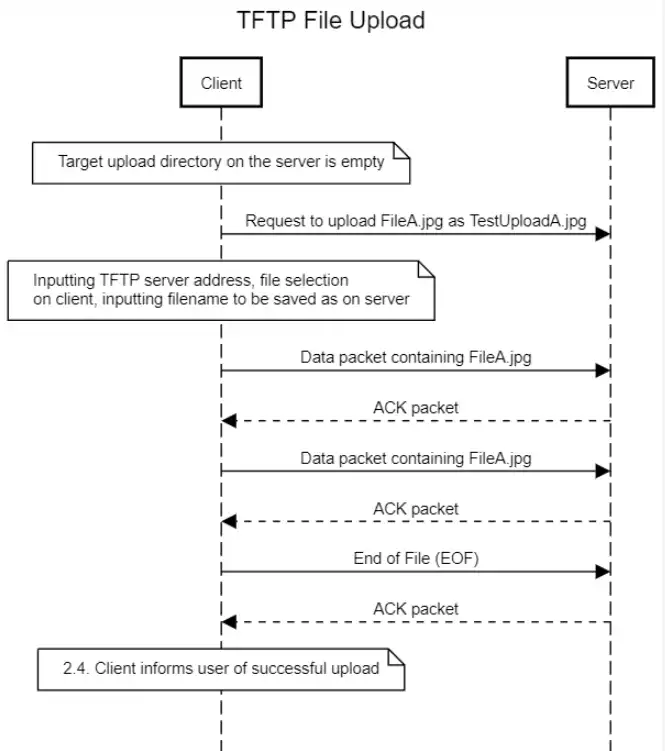
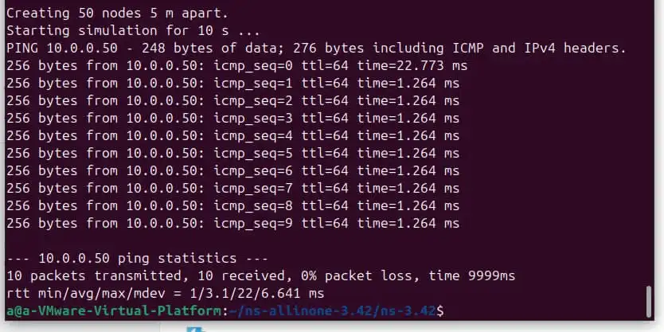
A simple command-line client-side ping (or ICMP Echo) implementation written in Python.
View on GitHubA simple C and x86 NASM program that converts an RGB image into its grayscale equivalent.
View on GitHub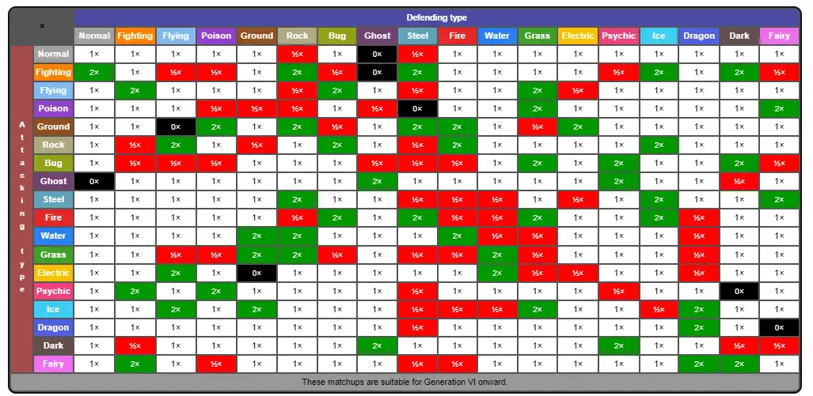
A RISC-V (RARS) program that simulates a simple matchup between the types of two of any of the first 100 Generation 1 Pokemons.
View on GitHub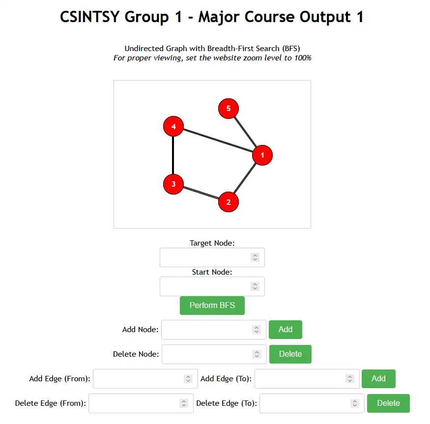
A web simulator and visualizer in JavaScript for a breadth-first search (BFS) algorithm on an undirected graph.
View on GitHub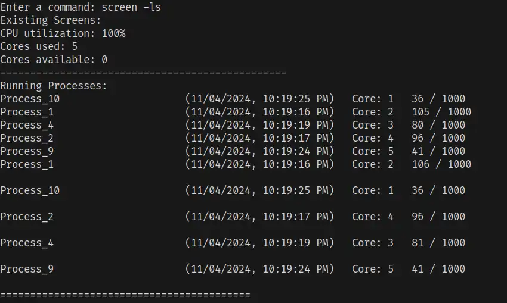
A complex command-line operating system emulator written in C++ that simulates some of the crucial features of modern operating systems.
View on GitHub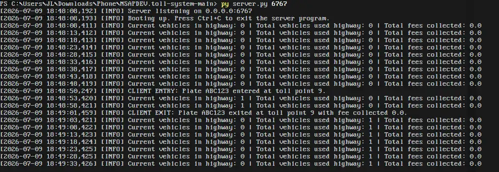
A client/server command-line toll system implementation written in Python.
View on GitHub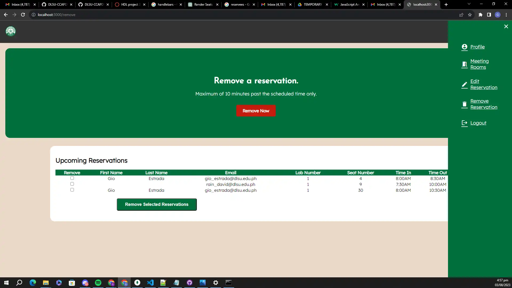
A computer laboratory reservation system for De La Salle University written in JavaScript and powered by MongoDB.
View on GitHub
These projects were pursued for personal skill development, recreation, or whenever
I need a very specific tool for my system and I couldn't find a good program for it online,
so I took it upon myself to create them. Some are no longer in active development, since
they already fulfill the function I intended for them.
Watch out for this section as I create and add new projects from time to time!
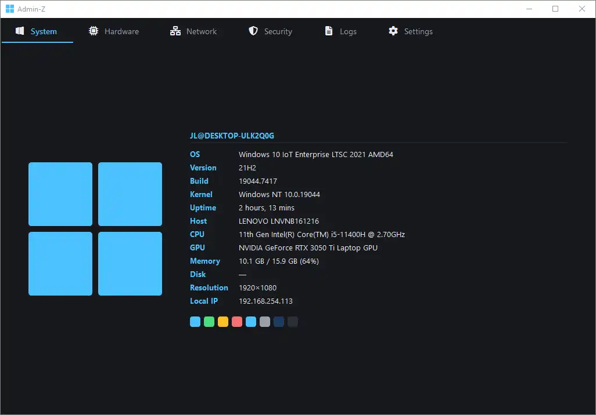
An administrative dashboard application for Windows 10/11 written in Python.
Tags: IT management, automation, AI-assisted software development
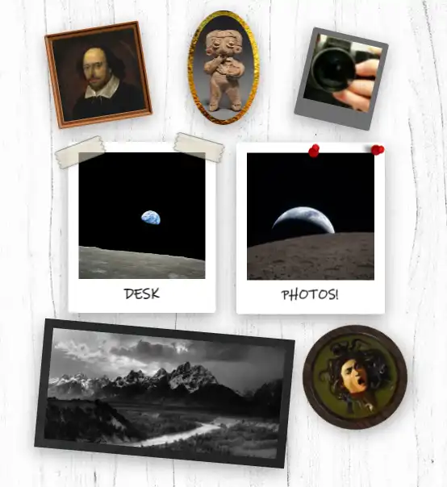
A JavaScript/CSS plugin for Obsidian that adds sticky and floating photos to your screen in editing mode.
Tags: Productivity, Scripting, Photo manipulation, AI-assisted software development
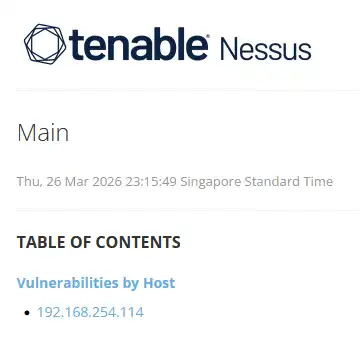
A report from a Nessus vulnerability scan conducted on my main system.
Tags: IT Management, Cybersecurity, Systems Hardening, Vulnerability Management
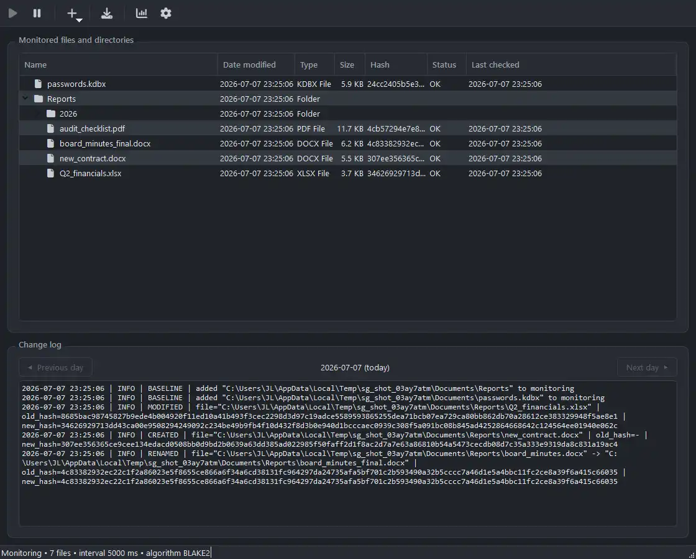
A file integrity monitoring application for Windows 10/11 written in Python.
Tags: Automation, Scripting, Cryptography, Cybersecurity
Ready to collaborate? Let's get in touch!
See Contact Details